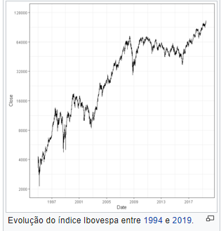

Ibovespa: B3
Índice Bovespa (Ibovespa) é o mais importante indicador do desempenho médio das cotações das ações negociadas na B3 - Brasil, Bolsa, Balcão. É formado pelas ações com maior volume negociado nos últimos meses. O valor atual representa a quantia, em moeda corrente, de uma carteira teórica de ações, constituída em 2 de janeiro de 1968, a partir de uma aplicação hipotética. Atribuiu-se o valor-base de 100 a um lote-padrão cujo carteira se avoluma sem receber mais nenhum aporte, com o acréscimo exclusivo de proventos gerados pelas ações que compõem o lote-padrão tais como a reinversão de dividendos, exercício de direitos e recebimento de bonificações.
Na B3, os investidores podem negociar ações de aproximadamente 500 empresas diferentes. Para se ter um indicador que represente de forma fiel e eficiente o comportamento do mercado, foi criado o Ibovespa. Trata-se da formação de uma suposta carteira de investimentos que, ao final de 2008, é composta de 66 ações retratando a movimentação dos principais papéis negociados na B3, representando não só o comportamento médio dos preços mas também o perfil das negociações - do mercado à vista - observadas nos pregões.
Estas ações, em conjunto, representam 80% do volume transacionado nos doze meses anteriores à formação da carteira. Como critério adicional, exige-se que a ação apresente, no mínimo, 80% de presença nos pregões do período. Portanto, o critério de corte é a liquidez do papel.
Para que sua representatividade se mantenha ao longo do tempo, a composição da carteira teórica é reavaliada a cada quatro meses. Essa reavaliação é feita com base nos últimos 12 meses onde são verificadas alterações na participação de cada ação.
O índice é calculado em tempo real, considerando instantaneamente os preços de todos os negócios efetuados no mercado à vista com ações componentes de sua carteira (lote padrão) e é divulgado pela B3, podendo ser acompanhado on line.
História
A metodologia do Índice Bovespa foi criada com o primeiro índice da Bolsa de Valores do Rio de Janeiro, desenvolvido pelo Prof. Mário Henrique Simonsen e equipe em 1962. Em 1966, Luís Sérgio Coelho de Sampaio, Superintendente Técnico, concebeu e implantou várias alterações metodológicas no antigo índice. Em janeiro de 1967 inicia-se o IBV - Índice da Bolsa de Valores do Rio de Janeiro, cuja metodologia foi adotada pela Bolsa de Valores de São Paulo na implantação do índice Bovespa em janeiro de 1968. A primeira carteira para o IBOVESPA abrangia 18 blue chips. Na segunda carteira, houve a expansão para 27:
- Banco da América
- Banco Comercial do Estado
- Banco do Comércio e Industria (ações preferenciais)
- Banco do Estado de São Paulo
- Banco Federal Itaú Sul Americano
- Aços Villares (ações preferenciais)
- Alpargatas
- Companhia Antarctica Paulista
- Arno
- Casa Anglo Brasileira
- Cimaf
- Cimento Portland Itau (ações ordinárias e preferenciais)
- Companhia Docas de Santos
- Duratex (ações preferenciais)
- Industrias Villares (ações ordinárias e preferenciais)
- Kibon
- Lojas Americanas
- Manufaturas de Brinquedos Estrela (ações preferenciais)
- Companhia Melhoramentos de São Paulo
- Moinho Santista
- Companhia Paulista de Força e Luz
- Ref. Expl. de Petróleo União (ações preferenciais)
- Companhia Souza Cruz
- Companhia Vale do Rio Doce
- Willys (ações ordinárias)
Em maio de 1971 o índice registrou um pico de quotações (boom) com as ações se valorizando no período de janeiro de 1968 a 1971, 12 vezes em termos reais (descontada a inflação conforme IGP-DI da Fundação Getúlio Vargas). Essa época ficou conhecida como "milagre brasileiro". Após a alta, o mercado sofreria com o estouro da bolha especulativa nas Bolsas do Rio de Janeiro e São Paulo, conhecido como "Crash de 1971", com um longo período de declínio das cotações do IBOVESPA que chegou ao nível mais baixo desse período em janeiro de 1973. Entre 1977 a 1982 o índice flutuaria em patamares ainda mais baixos até que em 1983 ocorreria o início de um boom vigoroso que atingiria o pico em abril de 1986 (subida real de 988,46% em 35 meses) mas que, assim como o "crash" de 1971, seria sucedido por um novo processo de baixa vertiginosa em 1987. A bolsa registrou grandes baixas com a “crise de 2008” e em 2014 com o início de uma recessão (2014-2016) novas perdas foram registradas. Após quedas sucessivas nos governos de Dilma, o Ibovespa registrou ganhos com o avanço de reformas desde o governo Michel Temer. Em 2019, a bolsa atingiu 100.000 pontos. Em 2020, a Pandemia causada pelo Coronavírus derrubou bolsas mundiais, o índice brasileiro foi fortemente afetado, a queda fez a bolsa sair de seu recorde nominal (118000) e atingir a sua minima (66000) em 3 de abril de 2020.
Fonte: Wikipédia